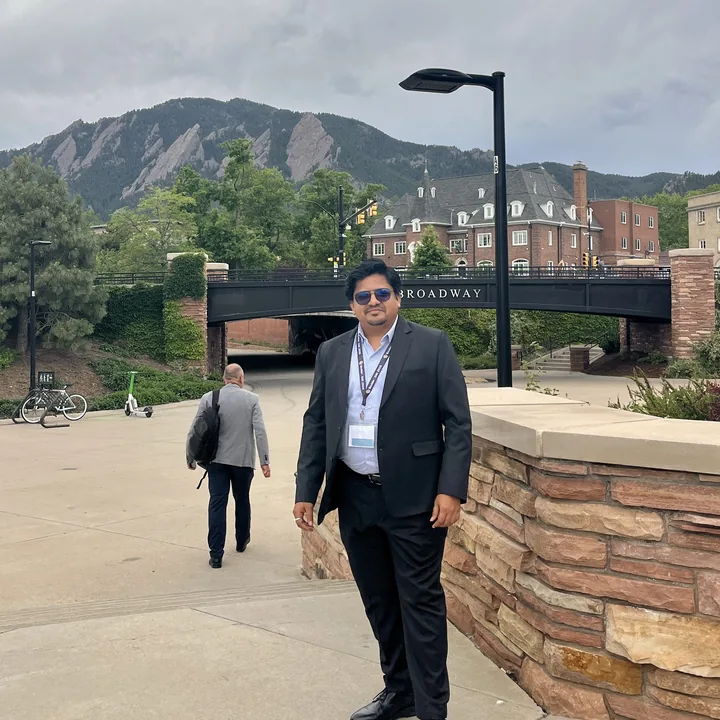
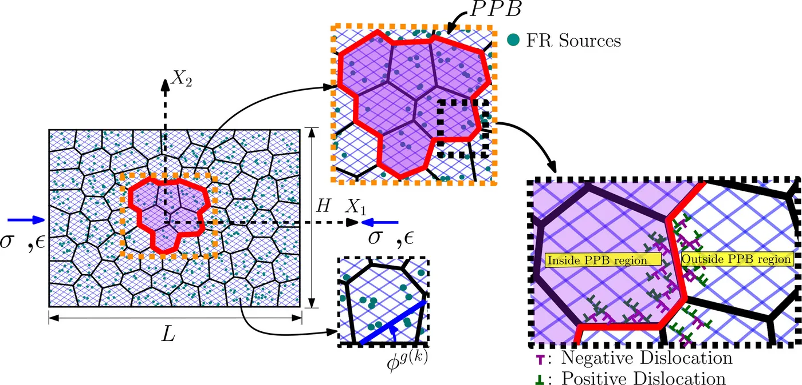
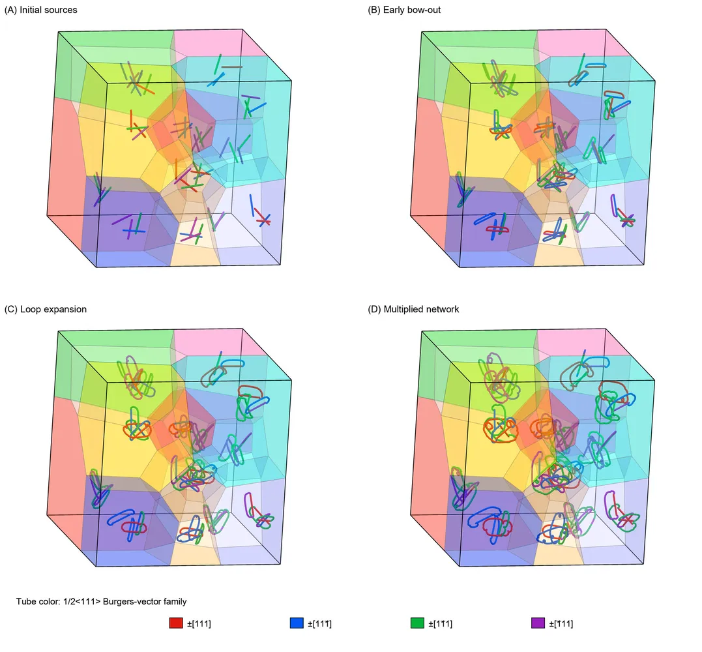
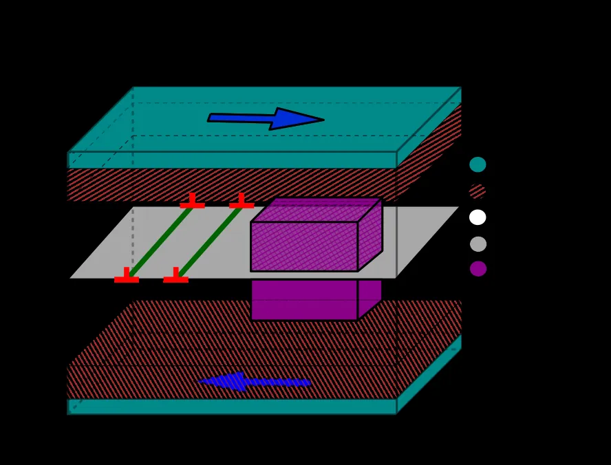
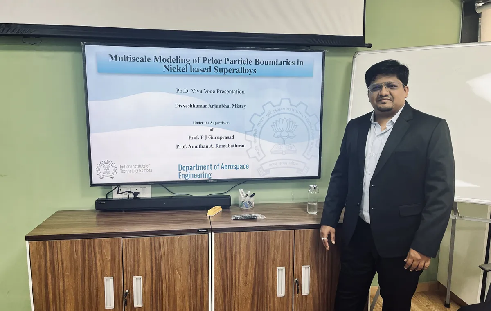
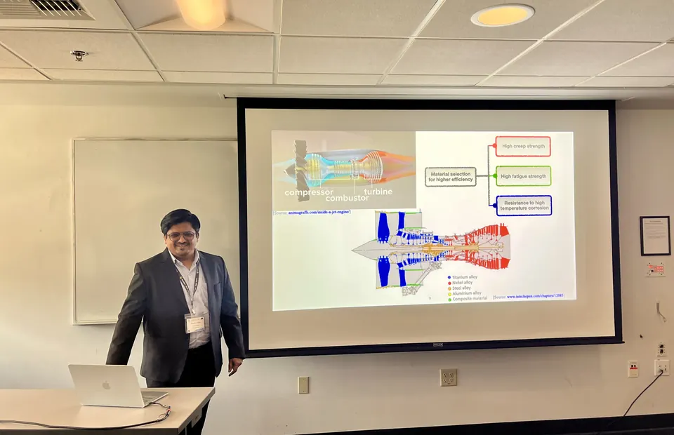
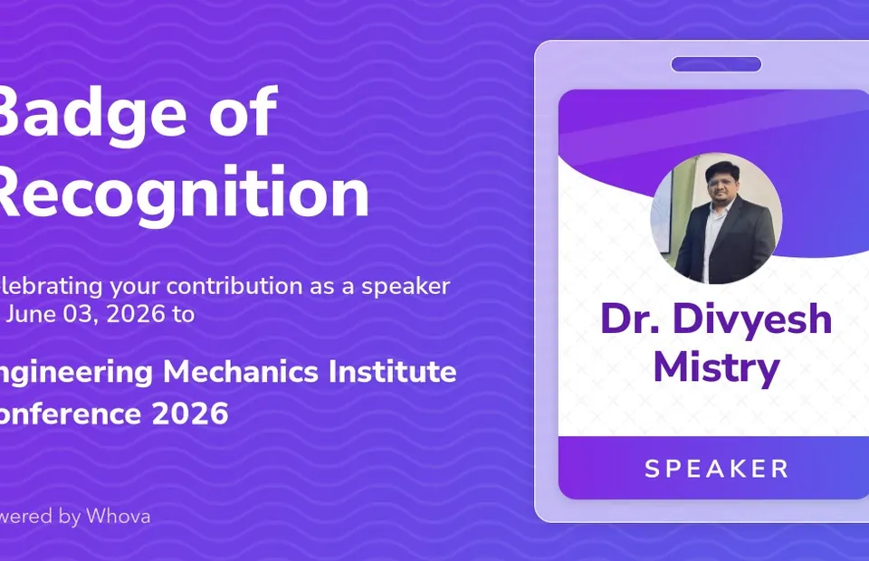
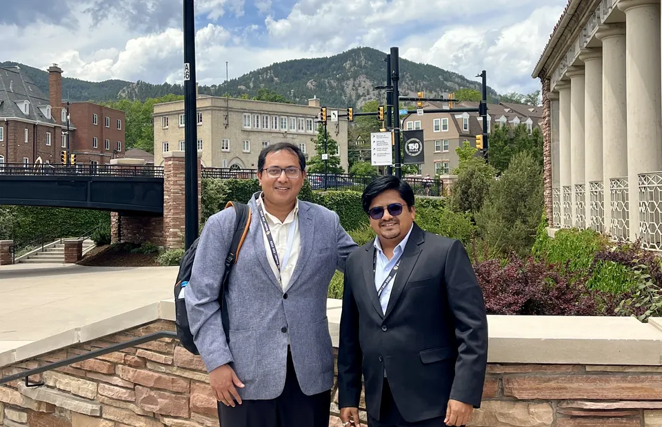

Atomistic simulation
LAMMPS-based molecular dynamics, defect analysis, generalized stacking-fault behavior, crack-tip processes, and OVITO/DXA workflows.
Computational materials scientist
Connecting atomistic mechanisms, discrete dislocation dynamics, and continuum-scale response to understand plasticity, fracture, and microstructural barriers in advanced structural materials.

Research profile
Dr. Divyesh A. Mistry develops physics-based computational descriptions of deformation and fracture in structural materials.
His work combines molecular dynamics, discrete dislocation dynamics, microstructure generation, continuum mechanics, and scientific data analysis to connect defect-scale interactions with collective material response. Current and recent applications include prior-particle-boundary effects in nickel-based superalloys and crack-tip plasticity in tungsten-based materials.
He completed his Ph.D. in Aerospace Engineering at the Indian Institute of Technology Bombay and previously served as a Visiting Researcher in Computational Materials Science at Merrimack College from April 2026 through July 31, 2026.
Core expertise
LAMMPS-based molecular dynamics, defect analysis, generalized stacking-fault behavior, crack-tip processes, and OVITO/DXA workflows.
Three-dimensional DDD, Frank-Read sources, obstacle and boundary interactions, network evolution, and microstructure-sensitive hardening.
Python, NumPy, Pandas, C/C++, Fortran, Linux/Unix, version control, workflow automation, and high-performance computing.
Reproducible post-processing and technical visualization using ParaView, OVITO, Neper, and custom analysis pipelines.
Experience
Merrimack College, Refractory Metals & Extreme Environments Initiative
315 Turnpike Street, North Andover, MA 01845, USA
Indian Institute of Technology Bombay, Aerospace Engineering
Indian Institute of Technology Bombay, Aerospace Engineering
CMR Institute of Technology, Bengaluru, India
Taught finite element methods, experimental stress analysis, and solid mechanics, supported by computational modules using ANSYS, MATLAB, and Python.
Featured research
Four connected research directions show how the work moves between atomic structure, discrete line mechanics, polycrystalline constraints, and engineering-scale interpretation.

Polycrystalline DDD reveals how PPB clusters promote dislocation pile-ups, back stresses, hardening, and persistent residual stress.
Explore the research
A modular, reproducible framework for Neper microstructures, BCC source initialization, network evolution, and quantitative analysis.
View workflow and code
Molecular dynamics identifies two power-law regimes in critical resolved shear stress and connects the transition to dislocation-core length scales.
Read the journal article
The research program connects atomistic defect properties with mesoscale collective dynamics while keeping the assumptions and predictive scope of each method explicit.
Review publications and outputsResearch in motion
The animation provides a direct view of the evolving atomistic configuration used to examine temperature-sensitive crack-tip relaxation and fracture response.
Related journal manuscript in preparationSelected outputs
Divyesh A. Mistry, Tawqeer Nasir Tak, R. Sankarasubramanian, and P. J. Guruprasad. Journal of Engineering Materials and Technology. Published online.
Divyesh A. Mistry and Amuthan A. Ramabathiran. Computational Materials Science 259, 114122.
Open-source modular Python workflow with a reproducible 15-grain example, tests, documentation, and citation metadata.
Upcoming journal manuscript connecting atomistic crack-tip processes with representative mesoscale dislocation-network evolution.
Education
Recognition
EMI 2026 | Boulder, Colorado
Presented June 2-5, 2026 at the Engineering Mechanics Institute Conference.



Collaboration
Selected collaborators and mentors connected to the published and ongoing work.
Professional contact
For research collaborations, scientific software, academic opportunities, and computational materials roles, contact Dr. Divyesh A. Mistry directly.